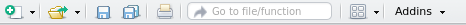

Capítulo 1 Empezando con R y RStudio
1.1 ¿Qué es R y RStudio?
R es un lenguaje y entorno para el procesamiento, visualización y análisis estadístico de datos. Ha sido creado en 1993 por R. Gentleman y R. Ihaka, ambos científicos del Departamento de Estadística de la Universidad de Auckland (Nueva Zelanda). Actualmente su desarrollo y mantenimiento está a cargo del R Core Team. El sitio oficial del proyecto es www.r-project.org

Figure 1.1: Página oficial de R Project
Hoy en día, R es la lingua franca del procesamiento y análisis estadístico de datos, tanto en el ámbito académico como comercial dado que es gratiuto, multiplataforma, de código abierto (open source, liberado con licencia GNU/GPL). Esto lo convierte en un software muy potente y que expresa el estado del arte de los métodos estadísticos ya que la comunidad de usuarios contribuya constantemente con funcionalidades e implementaciones de nuevos métodos y técnicas estadísticas.
Al igual que su antecesor S, la flexibilidad y potencia de R se basa en su interfaz de comandos (CLI, del inglés command line interface ) que permite la ejecución de comandos de manera interactiva (en consola) o automática mediante scritps.
Figure 1.2: Consola o terminal de Windows, Mac OS X y Linux corriendo la última versión estable de R

Figure 1.2: Consola o terminal de Windows, Mac OS X y Linux corriendo la última versión estable de R
Existen algunos desarrollos de interfases gráficas (GUIs, del inglés graphical user interface), e.g. RCommander, Deducer, que ofrecen la posibilidad de, mediante menues y botones, ejecutar análisis relativamente simples minimizando la necesidad de escribir código.

Figure 1.3: Interfase de R Commander
Por su parte, los entornos de desarrollo integrados (IDE por sus siglas en inglés integrated development environments) ofrecen un enfoque intermedio con menúes o funciones asistentes que facilitan algunas tareas generales (abrir archivos, carga de datos, exportar gráficos y resultados) pero dejando la codificación del análisis estadístico en manos del usuario mediante la ejecución de scripts. Entre estas alternativas se destaca RStudio ( www.rstudio.com ) el cual también es de código abierto (licencia GNU/GPL), multiplataforma y ofrece una versión gratuita.

Figure 1.4: Interfase de RStudio
1.2 ¿Cómo instalar R y RStudio?
RStudio requiere que el sistema tenga al menos una versión de R instalada. Ambos softwares son multiplataforma y pueden ser ejecutados en sistemas operativos Windows, OS X y Linux. A continuación se describe el procedimiento para instalar R y RStudio bajo Windows.
1.2.1 Instalación de R
- Descargar el archivo instalador correspondiente a la última versión estable de R desde el CRAN1 (del inglés, Comprenhensive R Archive Network) visitando el siguiente link.2
Figure 1.5: Página de descaga de R
Una vez finalizada la descarga ejecutar el archivo
.exey seguir el asistente de instalación con todas las opciones por defecto.Si la instalación ha sido exitosa el el menú Inicio > Todos los Programas > R se encontrarán dos accesos directos
R i386 3.5.1yR x64 3.5.1los cuales permiten correre la interfase de usuario mínima que viene con la versión de R para Windows.

Figure 1.6: R GUI para Windows
1.2.2 Instalación de RStudio
- Ir al sitio web de descarga de RStudio: https://www.rstudio.com/products/rstudio/download/

Figure 1.7: Página principal de RStudio
- Descargar el archivo de instalación correspondiente a nuestra plataforma o sistema operativo. Por ejemplo: para Windows iniciará la descarga del archivo
RStudio-1.1.453.exe
Figure 1.8: Página principal de RStudio
- Una vez finalizada la descarga ejecutar el archivo
.exe3RStudio-1.1.453.exey seguir el asistente de instalación con todas las opciones por defecto.
Si la instalación ha sido exitosa el el menú Inicio > Todos los Programas > RStudio se encontrará el acceso directo a RStudio el cual, mediante el menu contextual (botón derecho del ratón) puede enviarse al Escritorio como acceso directo o bien anclar al menu de Inicio o barra de acceso rápido.
Ahora sí, ya tenemos listo R y RStudio para empezar a trabajar!!
1.3 Primera sesión en RStudio
El entorno de trabajo de RStudio se divide en cuatro paneles: (1) el editor, (2) la consola, (3) entorno, historia de comandos y conexiones y (4) administrador de archivos, gráficos, ayuda y paquetes.

Figure 1.9: Interfase principal de RStudio
- Editor de scripts. Por defecto este panel no aparece a menos que se cree un nuevo script o se abra uno previamente guardado. Es básicamente un editor de texto plano como el block de notas, aunque tiene algunas funcionalidades importantes:
- Resaltado sintaxis: mediante colores resalta las funciones, variables, comandos o palabras claves del lenguaje R
- Sangrado automático: agrega espacios en blanco para mantener la sangría de los bloques de código.
- Completado automático: muestra sugerencias para completar el comando o argumentos usando la tecla
TAB.
Consola. Es donde reside R propiamente dicho. Allí se ejecutan los comandos y se obtienen las salidas de R. El símbolo es
>indica que R está disponible para recibir un comando que ouede ser tipeado directamente, o bien enviado desde el editor de scripts usando la combinaciónCTRL + ENTERoCTRL + R.Environmnet/History. En la primera pestaña se visualizan los objetos (variables, funciones o datos cargados) en el entorno de R. En la segunda se puede ver el historial de comandos ingresados o enviados a la consola
Files/Plots/Packages/Help/Viewer. Allí se puede manejar los archivos del directorio de trabajo, visualizar los gráficos generados en R con posibilidad de exportarlos en varios formatos, administrar los paquetes o complementos, buscar o explorar el manual de ayuda.
1.3.1 Crear un Proyecto
Antes de comenzar es conveniente crear un proyecto dentro de RStudio. Esto permitirá organizar los archivos de datos, las salidas, los scripts, etc., dentro de un directorio de trabajo (working directory) y volver a ellos de manera más rápida y eficiente.
Ir a
File > New project...o bien el íconoNew project.Luego seleccionar
New directoryyEmpty projectUna vez en el cuadro de diálogo
Create new project
En Directory name ingresar el nombre del proyecto (e.g. Diseño2016) que será a su vez el nombre de la carpeta que RStudio va a crear.
Luego en Create project as a subdirectory of vamos indicar donde queremos que Rstudio cree la carpeta.
- Si todo sale bien, se crea la carpeta con el nombre que indicamos y dentro de ésta un archivo con extensión
.Rproj
1.3.2 Modo interactivo: la consola
La línea de comando o consola es el modo interactivo mediante el cual podemos ejecutar comandos directamente en el intérprete de R. El símbolo > indica que R está disponible esperando una orden. Si la orden no está completa el símbolo se transoforma en +. Por ejemplo: 2 + 2
## [1] 4Otro ejemplo: el promedio de los números 1, 3 y 4
## [1] 2.666667El simbolo # indica que lo que sigue es un comentario y por lo tanto debe ignorarse
1.3.3 Creación de un script
El Editor de Scripts (panel 1) es un editor de texto que está conectado con la consola y gracias a algunas funcionalidades facilitan la edición de código
Para crear un nuevo script se puede usar uno de los siguientes métodos:
- Ir a al menu
File > New File > R Script - Usar el atajo de teclado
CTRL + SHIFT + N - Clickear en el primer ícono de la barra de menu

Una vez abierto el script en blanco, se pueden empezar a escribir los comandos de R, por ejemplo:
# Crear un vector con 10 números aleatorios
x <- runif(10, min = 0, max = 10)
# Calcular el promedio de estos números
mean(x)Para ejecutar estos comandos en la consola hay que posicionarse en la línea o seleccionar las líneas que se quieren ejecutar y luego:
- Ir al menu
Code > Run Selected Line(s) - Usar el atajo de teclado
CTRL + ENTERoCTRL + R - Usar el ícono
Runde la barra de herramientas de la pestaña del script
Para guardar el script:
- Ir al menu
File > Save - Usar el atajo de teclado
CTRL + S - Usar el ícono con el diskette de la barra de herramientas global o de la pestaña del script activo.
CRAN se compone de un conjunto de servidores espejo distribuidos alrededor del mundo que tienen copias de R y sus paquetes. No es necesario escojer el espejo más cercano ya que el espejo nube (https://cloud.r-project.org) automáticamente determina de que servidor conviene realizar la descarga.↩
Al momento de escribir estas instrucciones la última versión estable de R era la 3.5.1 “Feather Spray”, por lo tanto el link apuntará al archivo
R-3.5.1-win.exe.↩Al momento de escribir estas instrucciones la última versión estable de R Studio era la 1.1.453 por lo tanto el link apuntará al archivo
RStudio-1.1.453.exe.↩